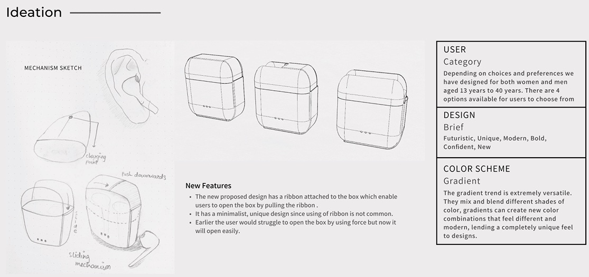
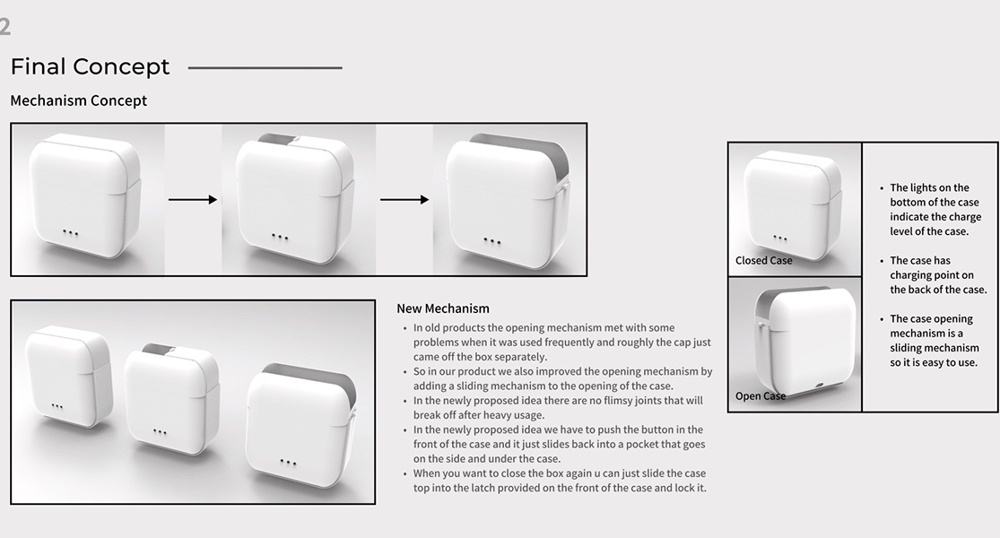
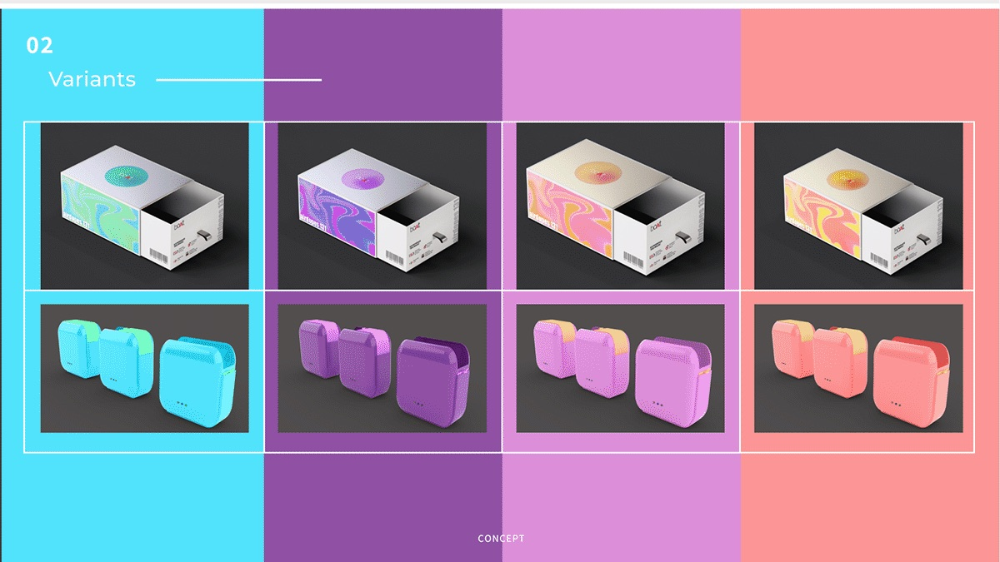

Problem identification
We interviewed Sapana Rai, a design student at MIT-WPU who uses her earpods 8 to 9 hours a day. She does not like the current packaging. She wants something easy to open, trendy and feminine, and opening the box is a hassle because there is very little space to fit a finger in, which often damages the box.
The other problems with existing packaging: a new box is hard to open without tearing it or using something sharp; after a drop the hinges are not strong enough and the opening mechanism fails; a bulky case is hard to put in a pocket; and the opening mechanism is delicate.
Ideation
The design is for women and men aged 13 to 40, with four options to choose from. The brief was futuristic, unique, modern, bold, confident and new, with a gradient color scheme. The new box has a ribbon attached, so it opens by pulling the ribbon instead of by force.

Final concept
The lid slides instead of hinging. Push the button on the front and the top slides back into a pocket on the side and under the case; to close it, slide the top into the latch on the front and lock it. There are no flimsy joints to break after heavy use. Lights on the bottom show the charge level and the charging point is on the back.

Variants
Four gradient colourways, on the box and on the case.
